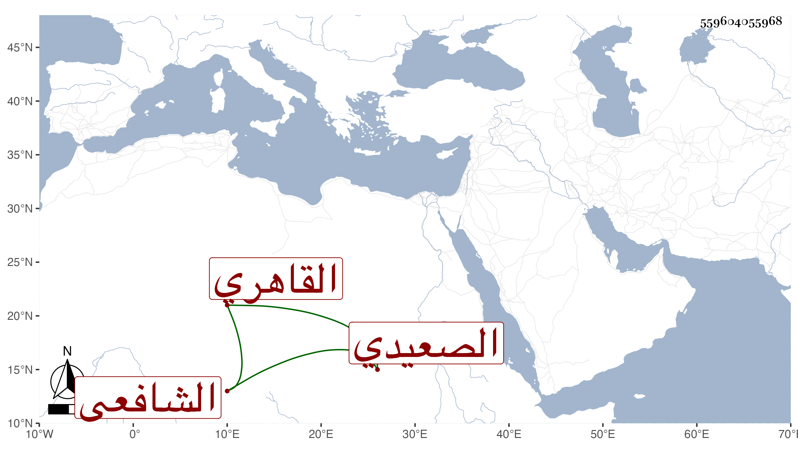

0902Sakhawi.DawLamic.ITO20230111-ara1.EIS1600.559604055968
Biography ID: 559604055968
935
إسماعيل بن علي بن حسن بن هلال بن معلى المجد الصعيدي الأصل القاهري الشافعي ويعرف بابن معلى . ولد سنة ثمان وعشرين وثمانمائة بخط باب الخرق ونشأ في كنف أبيه فحفظ القرآن وكتبا كالعمدة والمنهاج ومختصر ابن الحاجب وألفية النحو واشتغل بالفقه والعربية والصرف والأصلين والمنطق وغيرها ومن شيوخه المناوي والتقي الحصني والعلاء الحصني والعز عبد السلام البغدادي والشمني والآبدي ، وشارك في الفضائل وتميز وأكثر المباحثة في الدروس ونحوها بصوت جهوري وتنزل في بعض الجهات وأقرأ الطلبة بل أخبرني أنه مر على الروضة بكمالها تدريسا مع ملاحظة المهمات والخادم وغيرهما وعمل الليث العابس في صدمات المجالس وحفظه بعضهم وكذا أخبرني أنه شرح قواعد ابن هشام وأن له غير ذلك كل هذا مع التكسب تحت الربع في سوق النساء وإليه المرجع هناك ، وحج غير مرة وكثر تردده إلي وتودده .
